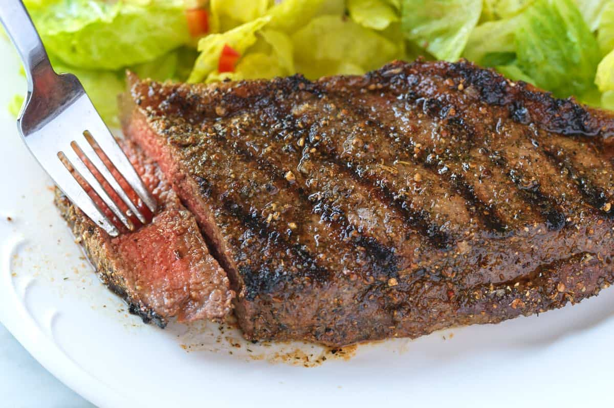

Super Easy Steak

Description
We've come up with what we think is the easiest steak recipe
we've ever seen. Follow along and you're soon to impress all your
friends with some mouth watering steak (and you'll barely have to
work for it!) Pair with your favorite sides, from fries and mac to
our personal favorite, mashed potatoes and roasted green beans.
Step by Step
- Lay your steak out on a cutting board and dry both sides as best as possible
- Season steak generously with salt and pepper and leave to come to room temp
- Put a skillet on the stove at high heat with a small coating of olive oil
- Once skillet is lightly smoking, add steak and don't move it for 2 minutes!
- Now you should be able to flip your steak and sear the other side for another 2 minutes
- Add 2 spoons of butter and some fresh rosemary and continually baste for 2 minutes
- Remove steak from heat and let rest for 2 minutes
- Enjoy!
Ingredients
- 1 steak of your preference
- Butter
- Fresh rosemary
- Salt
- Pepper
Home